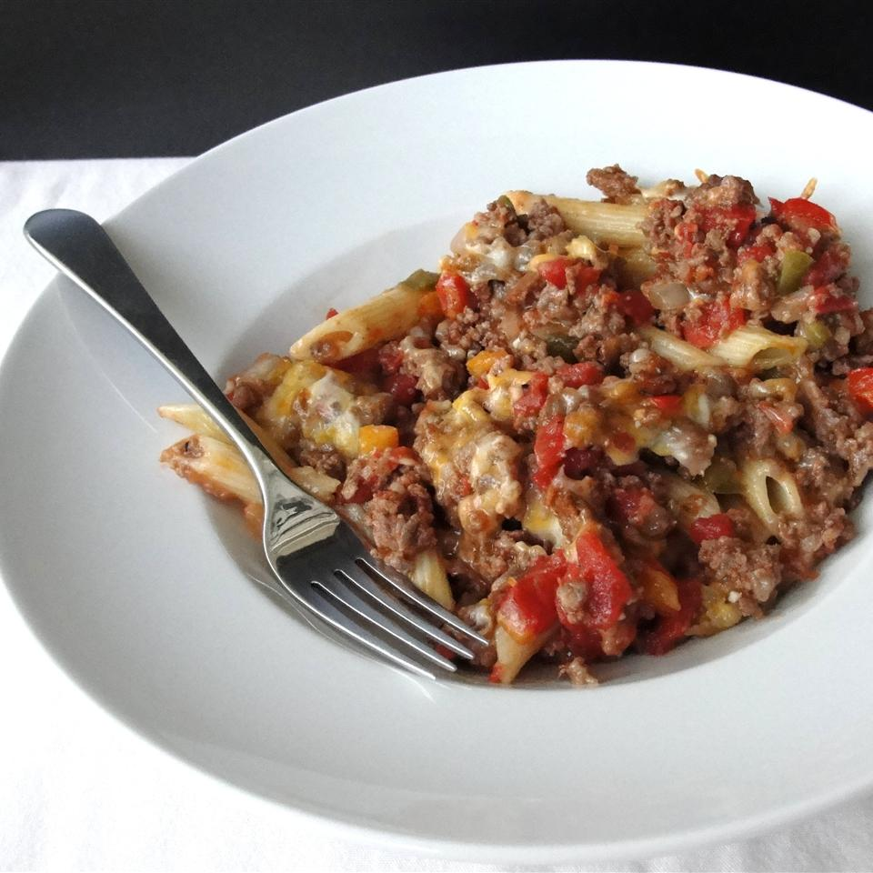

Johnny Marzetti Casserole

Ingredients
- 8 ounces rotini pasta
- 1 pound ground beef
- 1/2 pound bulk mild italian sausage
- 3/4 cup chopped onion
- 1/4 cup chopped celery
- 1 clove garlic, minced
- 1 tablespoon minced green bell pepper
- salt and pepper to taste
- 1 (14.4 ounce) can diced tomatoes
- 1 (15 ounce) can tomato sauce
- 2 cups shredded italian cheese blend
- 1 1/2 cups shredded sharp cheddar cheese
Directions
- Preheat oven to 350 degrees F (175 degrees C).
- Bring a large pot of lightly salted water to a boil. Add pasta and cook until just al dente, 6 to 8 minutes; drain. Run cold water over the pasta to stop pasta from cooking further. Set aside.
- Meanwhile, cook the ground beef and sausage until completely browned and crumbled, 7 to 10 minutes. Mix in the onion, celery, garlic, and pepper; continue to cook and stir another 5 minutes. Season with salt and pepper. Remove from heat and stir in tomatoes and tomato sauce. Allow to cool five minutes.
- Lightly grease a large casserole dish. Spread the pasta over the bottom of the dish. Sprinkle the Italian cheese blend over the pasta. Pour the meat mixture over the pasta and cheese. Cover dish with heavy aluminum foil. Bake in preheated oven for 45 minutes; remove foil and sprinkle Cheddar cheese evenly over the casserole. Continue baking until Cheddar cheese has melted, about 5 minutes. Rest for 10 minutes before serving.
Nutrition Facts
Per Serving:
648 calories; protein 40.2g; carbohydrates 39.7g; fat 36.6g; cholesterol 120.1mg; sodium 1331.6mg.
Check out some other cool recipes!
Return to Homepage